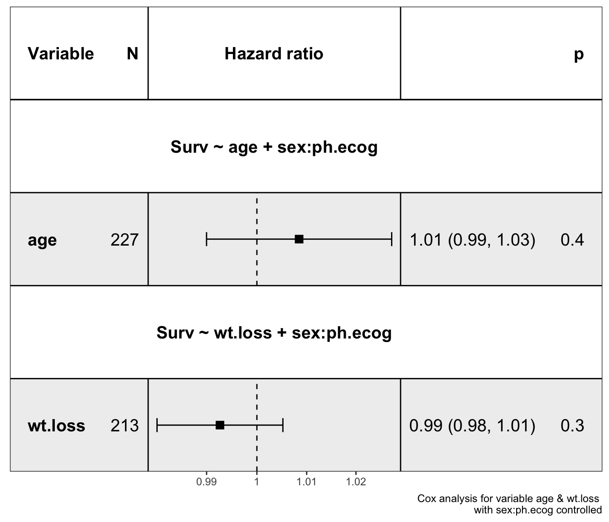
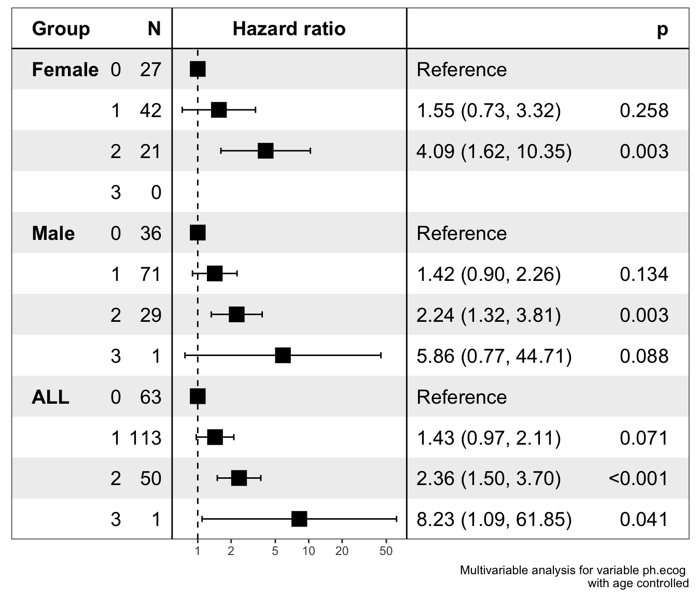

ezcox v1.0.2 更新
王诗翔
针对@lijing-lin在GitHub的ezcox仓库提出的Fast way to add interaction terms?问题，
这两天闲暇时废了些脑细胞进行解决。同时也fix之前记录的一个遗留问题。
remotes::install_github("ShixiangWang/ezcox")交互项支持
之前为了解决用户数据列名不符合的R命名规则，在源代码例自动对不合法名字进行了反撇号标记。
这会导致R的公式没法进行解析，例如sex:age会被判断为一个列名，R的公式没法解析它，因为
找不到数据中对应的sex:age列，所以会报错。
library(survival)
library(ezcox)
lung$ph.ecog <- factor(lung$ph.ecog)
ezcox(lung, covariates = c("age"), controls = "sex:ph.ecog")## # A tibble: 5 × 12
## Variable is_control contrast_level ref_level n_contrast n_ref beta HR
## <chr> <lgl> <chr> <lgl> <lgl> <lgl> <dbl> <dbl>
## 1 age FALSE age NA NA NA 0.00844 1.01
## 2 age TRUE sex:ph.ecog0 NA NA NA -0.890 0.411
## 3 age TRUE sex:ph.ecog1 NA NA NA -0.580 0.560
## 4 age TRUE sex:ph.ecog2 NA NA NA -0.236 0.790
## 5 age TRUE sex:ph.ecog3 NA NA NA 0.967 2.63
## # … with 4 more variables: lower_95 <dbl>, upper_95 <dbl>, p.value <dbl>,
## # global.pval <dbl>另外，一些数据的计算会由于交互项的引入带来麻烦，我选择将一些结果列直接赋值为NA来消除。
所以新的特性的实现是有一些代价的。
另外值得注意的时，由于forestmodel包不支持提取交互项的数据，在绘图时会被自动忽略。
show_forest(lung, covariates = c("age", "wt.loss"), controls = "sex:ph.ecog")
ezcox_group()乱序问题
在之前的版本中下面的代码运行后所有数据生成的ALL组会跑到中间去，本次版本进行了修复，
确保它位于最后一个。
lung$sex <- ifelse(lung$sex == 1, "Male", "Female")
ezcox_group(lung, grp_var = "sex",
covariate = "ph.ecog", controls = "age", add_all = TRUE)## $data
## $stats
## # A tibble: 12 × 13
## Group Variable is_control contrast_level ref_level n_contrast n_ref beta
## <chr> <chr> <lgl> <chr> <chr> <dbl> <dbl> <dbl>
## 1 ALL ph.ecog FALSE 1 0 113 63 0.359
## 2 ALL ph.ecog FALSE 2 0 50 63 0.857
## 3 ALL ph.ecog FALSE 3 0 1 63 2.11
## 4 ALL ph.ecog TRUE age age 228 228 0.0108
## 5 Female ph.ecog FALSE 1 0 42 27 0.439
## 6 Female ph.ecog FALSE 2 0 21 27 1.41
## 7 Female ph.ecog FALSE 3 0 0 27 NA
## 8 Female ph.ecog TRUE age age 90 90 -0.0153
## 9 Male ph.ecog FALSE 1 0 71 36 0.353
## 10 Male ph.ecog FALSE 2 0 29 36 0.809
## 11 Male ph.ecog FALSE 3 0 1 36 1.77
## 12 Male ph.ecog TRUE age age 138 138 0.0182
## # … with 5 more variables: HR <dbl>, lower_95 <dbl>, upper_95 <dbl>,
## # p.value <dbl>, global.pval <dbl>
##
## $models
## # A tibble: 3 × 6
## Group Variable control model_file model status
## <chr> <chr> <chr> <chr> <list> <lgl>
## 1 ALL ph.ecog age /Volumes/Extra/R/Rtmp//Rtmp9B6ubK/ezcox… <coxp… TRUE
## 2 Female ph.ecog age /Volumes/Extra/R/Rtmp//Rtmp9B6ubK/ezcox… <coxp… TRUE
## 3 Male ph.ecog age /Volumes/Extra/R/Rtmp//Rtmp9B6ubK/ezcox… <coxp… TRUE
##
## attr(,"class")
## [1] "ezcox"
##
## $plot